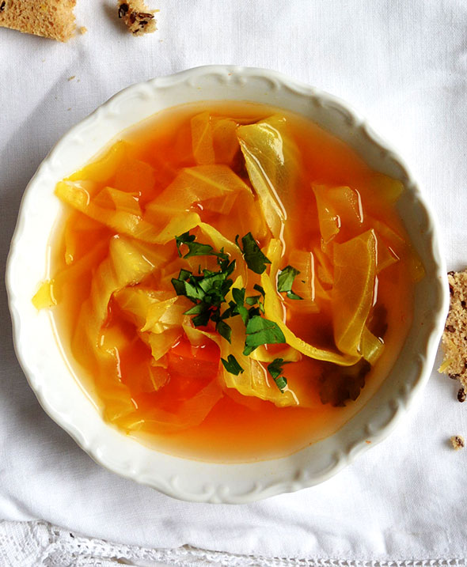

Healing cabbage Soup

My body craves this cabbage soup whenever I have a cold, but it's equally comforting on a cold winter's night. It's so easy to make; add extra vegetables, leftover chicken, or rice for a more substantial meal.
Ingredients
- 3 tablespoons olive oil
- ½ onion, chopped
- 2 cloves garlic, chopped
- 2 quarts water
- 4 teaspoons chicken bouillon granules
- 1 teaspoon salt, or to taste
- ½ teaspoon black pepper, or to taste
- ½ head cabbage, cored and coarsely chopped
- 1 (14.5 ounce) can Italian-style stewed tomatoes, drained and diced
Steps
Step 1:
Heat olive oil in a large stockpot over medium heat. Stir in onion and garlic; cook until onion has softened, about 5 minutes.Step 2:
Stir in water, bouillon, salt, and pepper. Bring to a boil, then stir in cabbage. Simmer until cabbage wilts, about 10 minutes. Step 3:
Stir in tomatoes. Return to a boil, then simmer 15 to 30 minutes, stirring often. Step 4:
Serve hot and enjoy!
Home